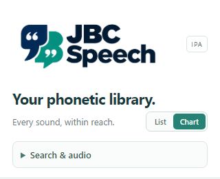
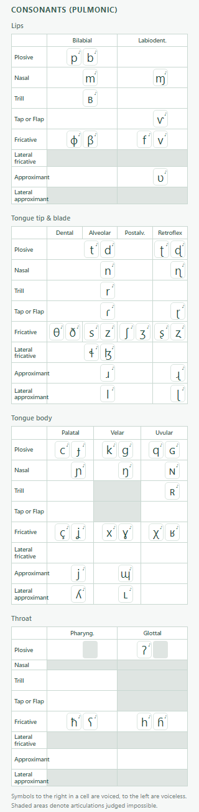
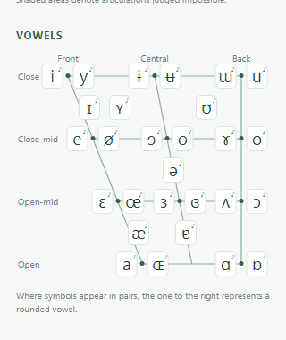
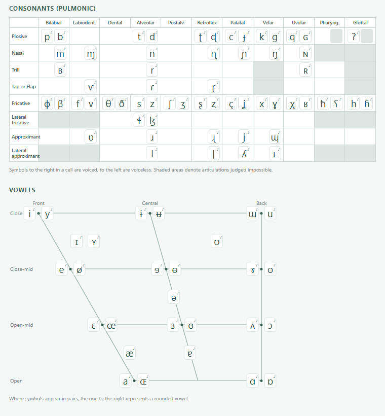

Chart view The IPA library laid out like the 2020 IPA chart · 26 Nov 2026
The pane now has a List | Chart switch. List is the original layout and is the default. Chart puts each symbol where it sits on the official IPA chart, so she can find a sound by where it's made instead of by name.
1The switch

2Breaking up the consonant table
The chart has 11 places of articulation, each with a voiceless/voiced pair. That's 22 symbol slots across, too many for a pane about 300 px wide. In a narrow pane the table is cut into four slices by place. Each slice keeps the chart's rows, pairs and grey "impossible" cells. Drag the slider to see the switch-over at 680 px.
3What it looks like



4Vowel geometry
Every vowel has an x (front → back) and y (close → open) between 0 and 1. The front edge slants right as the mouth opens. The 0.43 slope was measured off the 2020 chart.
The plot's height follows the pane width (clamp(210px, 48vw, 330px)). An earlier fixed-ratio version pushed the back vowels off a narrow pane; the first screenshot caught it.
5Decisions
| Topic | Decision |
|---|---|
| Default view | Liston first open; afterwards whichever she used last. |
| Search in Chart view | Non-matching symbols fade out, so the chart keeps its shape. |
| Jump to | Same menu, scrolls to the matching chart section. |
| Diacritics | Shows the chart's example (n̥ d̥); a click inserts only the mark. |
| Shading | impossible cell ʔimpossible voiced half (glottal, pharyngeal plosives) |
| Not on the chart | Extras section: t͡ʃ d͡ʒ t͡s d͡z ɚ ɝ ɫ [ ] /. ɫ was newly added to the library. |
| Audio, Shift-click, keyboard | Identical in both views; Chart view reuses the List view's buttons. |
6Safety net (automated tests)
- The chart and the library contain exactly the same symbols. Nothing missing, nothing extra, no duplicates.
- Every consonant row covers all 11 places, and no merged cell is cut across two slices.
- Landmarks match the 2020 chart: t d merged, θ/ʒ placement, shaded cells.
- Every vowel stays inside the trapezoid.
Still to do in real Word: insert a consonant, vowel and diacritic from Chart view; Shift-click a vowel; widen the pane past 680 px; hide/reopen and check the view is remembered.